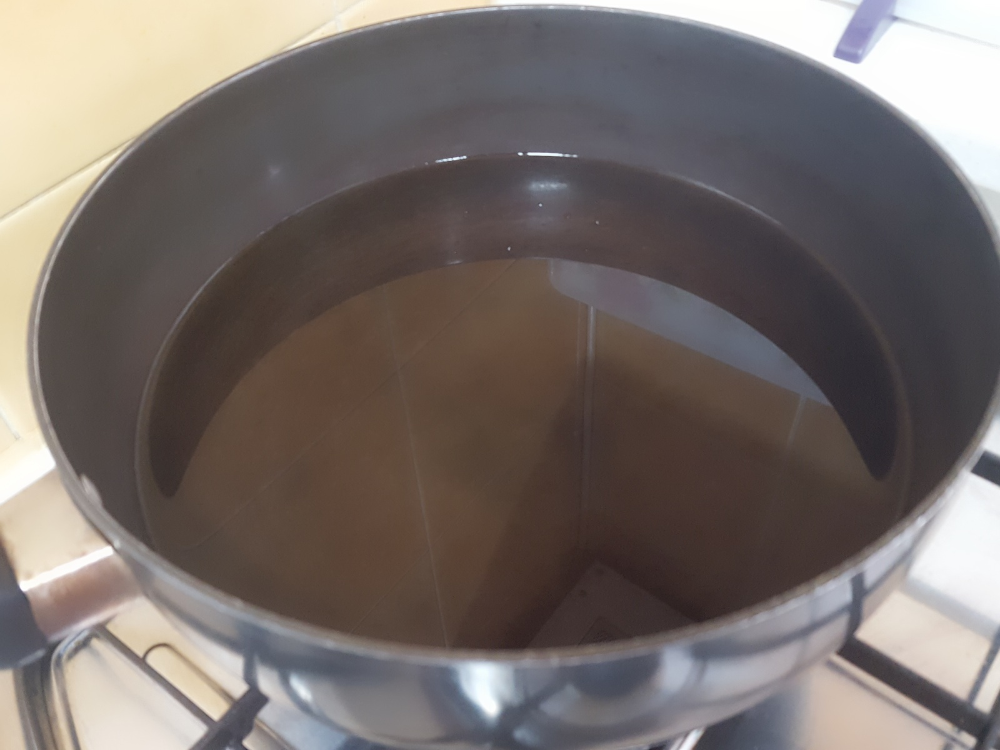
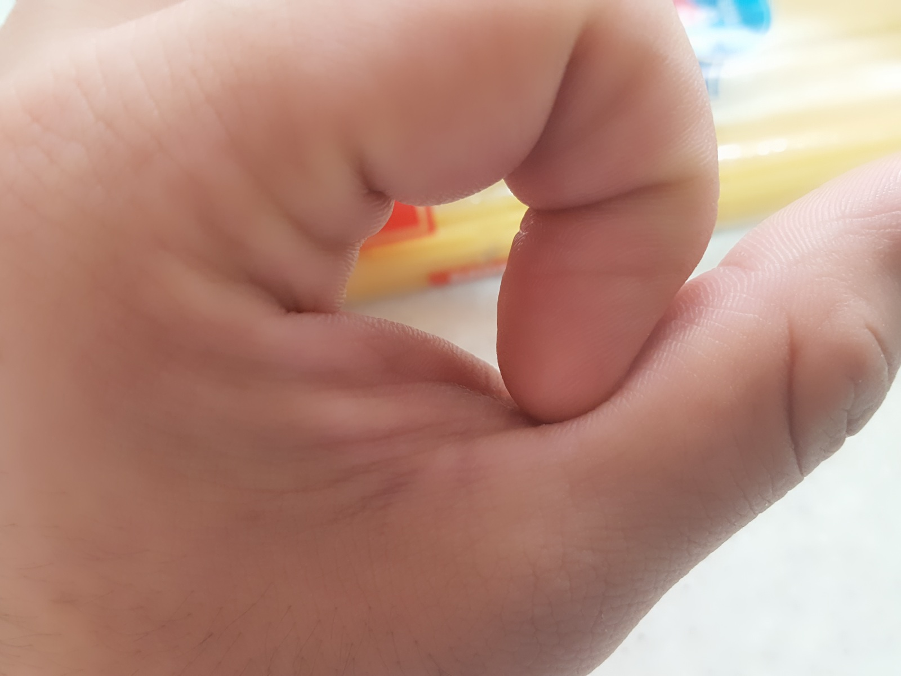
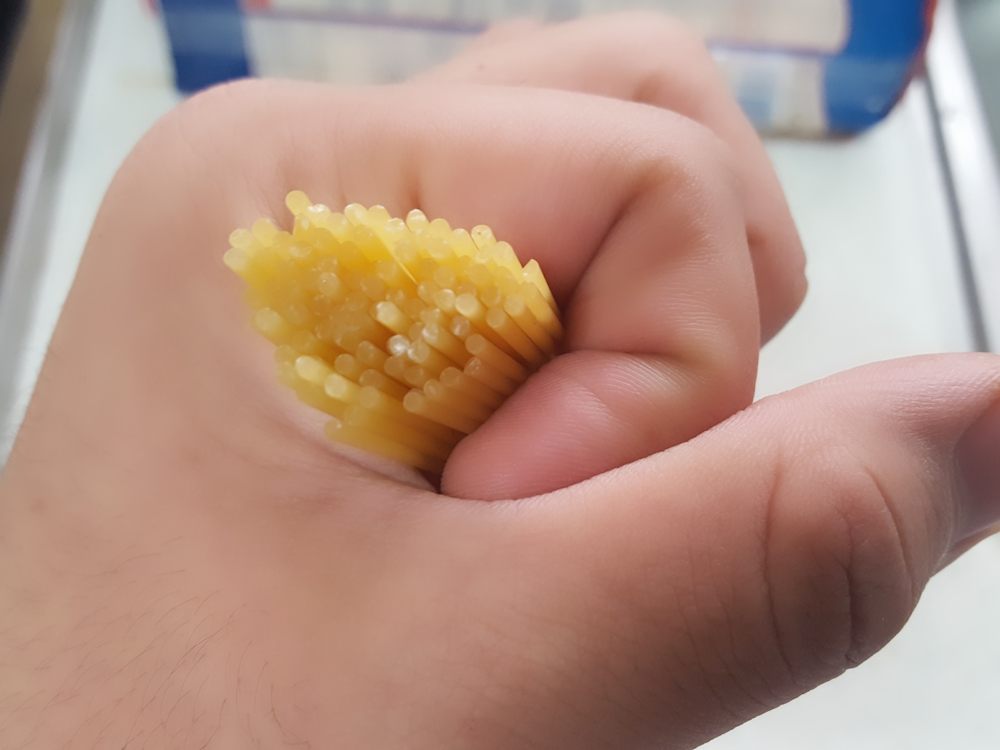
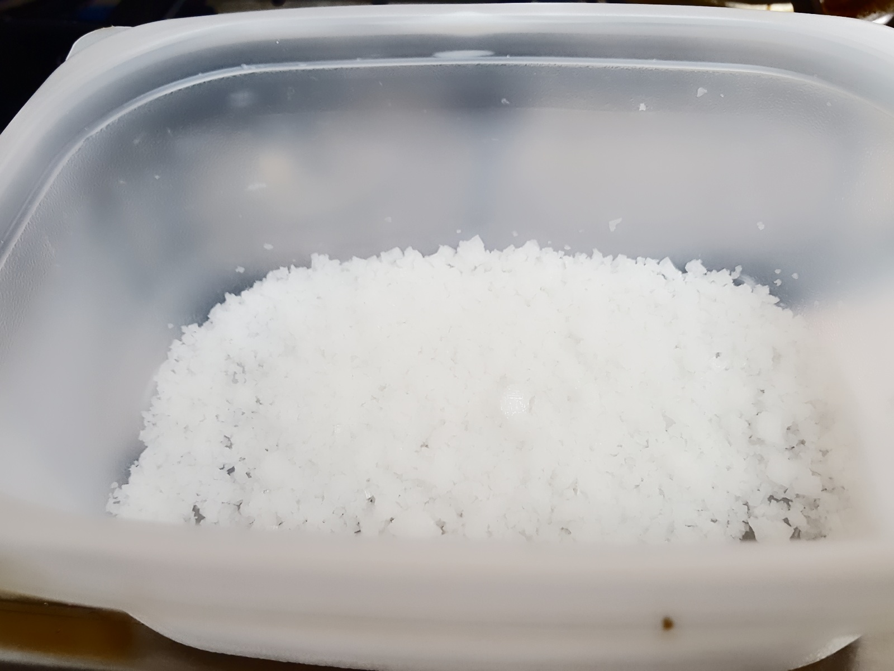
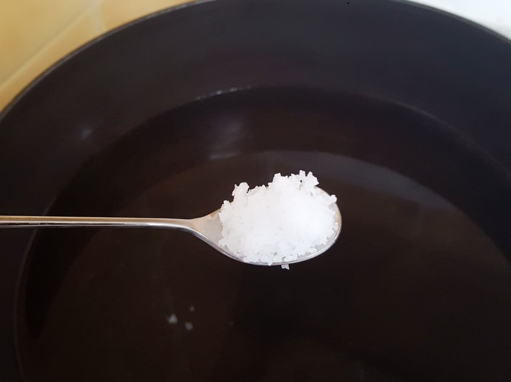
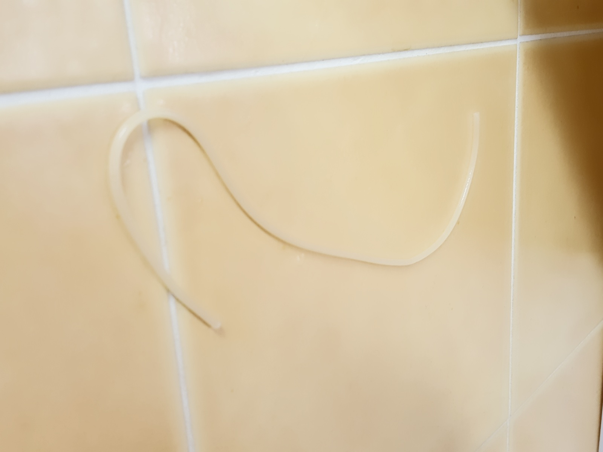

[파스타] 파스타를 할 때 팁!! | Cook
집에서 심심할 때.. 출출할 때..
라면은 질리고.. 라면 모독발언...!! 뭔가 맛있는거 먹고싶을 때..
생각 외로 쉽고 간단하게 만들 수 있는 만만한 음식이 파스타 입니다아l!!
그래서 파스타 요리를 포스팅 하기 전에, 알아두면 좋을 팁 들에 대해서 간단히 설명할까 해요!
뭐 하다보면.. 정석대로는 개뿔 닥치는대로 하게 되긴 하지만..
그래도 냄비, 물, 파스타 정도는 준비 해주셔야겠죠?
준비물 : 냄비, 물, 파스타, 굵은 소금
1. 물의 양

파스타를 할 때, 면을 삶기 위해서는 물이 반드시 필요하겠죠?
'몇인분의 면을 삶을 것인가?' 에 따라서 물의 양이 달라지는데요. (당연한 말이지만..)
결론부터 말씀 드리자면, 1인분에 물 1L 정도가 적당합니다.
그래도 뭐.. '꼭 이렇게 해야해!' 하고 누가 정해 놓은 것도 아니고..
자기 맘대로 요령껏 하면 되겠죠? 그냥.. 보편적으로 많이 쓰인다구요..ㅎㅎ
2. 면의 양

사람마다 먹는 양이 또 다르겠지요??
자, 손을 들어 엄지손가락을 펴 마디를 확인해 보세요.
마디가 두 개 보이시죠?
그 중에, 안 쪽에 있는 마디. 두 번째 마디에 검지 손가락을 대 보세요.
작은 원이 하나 만들어지죠??
그 작은 원만큼이 보통 1인분 정도라고 생각하시면 됩니다.

이렇게요. 보기에는 정말 얼마 안되어 보이는데..
이게 또 삶고나면 꽤나 많은 양입니다~~!!
전에 욕심부리고 일부로 손가락 원을 크게 만들었다가
엄청나게 많은 양을 감당하지 못했던 기억이..
3. 면 삶기
면을 삶을 때, 물이 팔팔 끓을 때 넣어주어야 합니다.
이 때, 물에다 소금을 넣어주는 것이 좋습니다.

뭐 떠서 마실 국물 만드는 거 아니잖아요..? ㅋㅋㅋ
그러니까 맛소금 미원 뭐 그런거 말고..
굵은 소금으로 넣어 줍시다.

물 1L 를 기준으로, 커피 스푼 있죠? 1T 정도 넣어줍니다.
지금은 필요하지 않지만, 육수가 필요한 파스타를 만드는 경우에는
이렇게 소금을 넣어줌으로써 이 물을 나중에 면수로 사용 할 수도 있습니다.
★★★★★ 그리고 가장 중요한 면 삶기!!!!! ★★★★★
보통은 타이머를 놓고 시간을 재는 것을 추천 드립니다만..
파스타 종류마다 시간이 다르더군요.
저같은 경우에는, 8분 30초정도 삶고 바로 건져냅니다.
7분 ~ 8분정도 삶으면 파스타의 심지가 약간 살아있는 정도.
8분 ~ 9분정도 삶으면 파스타가 적당히 탄력있게 익은 정도.
9분 ~ 10분정도 삶으면 파스타가 누구나 먹기 좋을 정도로 잘익은 정도
그래도 모르겠으면, 던져보세요.
벽에다 던졌을 때, 튕겨나온다? 그럼 아직 좀 더 익혀야 합니다.

그런데 벽에다 던졌는데 찰싹! 붙어버린다? 불을 끄세요!!
지나치게 너~~무 많이 익히면 이것도 불어요...ㅋㅋㅋ